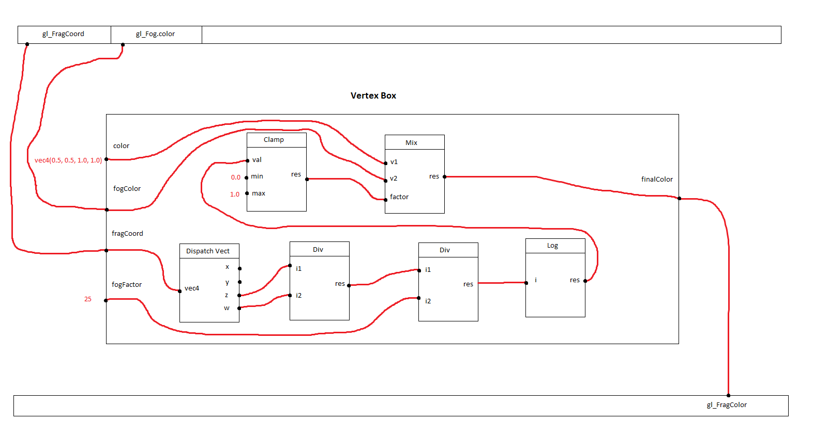

In this tutorial, you will see the development of a more complicated project that will implement a fog effect. You will see a more advanced nodes linking, and some mathematical function that could be used to build complex shaders.
A fog shader is some more complex than the previous one. As in the first tutorial, all the work needs to be done in the pixel (fragment) shader. We assume that all the shaders can be build using very small blocks called Math functions
Here is the schema of the architecture of the shader we are going to create: 
It mays look confusing, but using the steps mentionned at the end of the previous part of the tutorial wich first point is to draw a schema like the one presented above, you will see that it will be very simple. This only is a matter of links and interfaces. To make it clearer, let's have a look on the effect of each of theses math functions. When reading theses description, remind that the goal of a fog shader is to change the color of the current fragment (or pixel) according to the distance to the camera of the projected object.
This shader can be used to get the component of a vector.
ShaderComp documentation, class DispatchVect4
The first step of the fog shader we are building is to get the z and w component of the coordinates of the current fragment (pixel) of the input image. The DispatchVect4 node will do this work for us.
This shader can be used to divide an input ba another.
ShaderComp documentation, class FloatDiv
The second and third step is consisting of two consecutive divisions: the z component of the input fragment coordinates by its w component. Then, the result of this division is again divided by a fog factor. We are here using a FloatDiv node because we do not want the result to be truncated or rounded as an integer.
This shader can be used to compute the logarithm of a value
ShaderComp documentation, class Log
Next, a logarithm is applyied to the result of all these operations. This allows us to achieve a realistic look of the fog.
This shader can be used to limit a value with a maximum and a minimum
ShaderComp documentation, class Clamp
Remember that the goal of our fog shader is to modify the color of the current fragment. In the API as in many shader languages, the color are represented by a floating point number (float) between 0.0 and 1.0. The resulting factor that have been computed for now can be far more than 1.0. To avoid that, we will use the clamp node setting its minimum value to 0.0 and its maximum value to 1.0
This shader can be used to mix two vectors of type float4 within a given factor
ShaderComp documentation, class Mix
The last step of the shader fog is to mix the color of the current fragment and the color of the fog. The mixing factor is the one computed by the chaining of all the previous shaders. As said before, the further the projected object is, the less visible it is. The mixing factor needs to be nearly equals to 1.0 beyond a certain distance. The output of this terminal node is the real resulting color of the fragment filtered by the fog.
The second step of the recipes given in the previous tutorial is to instantiate the project and the nodes needed. Then, theses nodes need to be added to the project. Remind that when adding a node to a project, the node is automatically added to the right bo corresponding to its type (a pixel shader is always added to the pixel box).
Many shaders like the ones of the math module (shaderComp.shaders.math) are not specific to any particular type. For exemple, you can add a logarithm function to the vertex box as well as to the pixel box. For that kind of shaders, you need to specify the type (using the enumeration shaderComp.core.ShaderType) when instantiating the shader. Here is the code for the creation of the nodes of our project:
from shaderComp.core import *
from shaderComp.shaders import *
# notice the import of the shaders of the math module
from shaderComp.shaders.math import *
# creation of the project 'myFog'
myFogProject = Project.Project('myFog')
# creation of the nodes
# remember that the first one is mandatory in the vertex box
myDefaultVertexShader = DefaultVertexShader.DefaultVertexShader()
myDispatchVect4 = DispatchVect4.DispatchVect4(ShaderType.PIXEL_SHADER)
myFloatDiv1 = FloatDiv.FloatDiv(ShaderType.PIXEL_SHADER)
myFloatDiv2 = FloatDiv.FloatDiv(ShaderType.PIXEL_SHADER)
myLog = Log.Log(ShaderType.PIXEL_SHADER)
myClamp = Clamp.Clamp(ShaderType.PIXEL_SHADER)
myMix = Mix.Mix(ShaderType.PIXEL_SHADER)
# adding nodes to the project
myFogProject.appendNode(myDefaultVertexShader)
myFogProject.appendNode(myDispatchVect4)
myFogProject.appendNode(myFloatDiv1)
myFogProject.appendNode(myFloatDiv2)
myFogProject.appendNode(myLog)
myFogProject.appendNode(myClamp)
myFogProject.appendNode(myMix)
The third step of the recipe is to add nodes to the project. It has been done in the code section above.
As you can see in the schema of the project displayed above, some shaders need to be parameterized to fit our needs. For exemple, the Clamp node needs a minimum and a maximum value. As you can see if you read the documentation, Clamp class implements a setMin and a setMax function allowing to set a constant to theses parameters.
As explained in the first part of the user tutorial, a node does not actually hold any parameter. Theses can be seen as regular inputs as any other input of this shader. To make it clearer, instead of setting the value of min to a constant using the corresponding function, you could link this input to any variable using the Project.addLink(...) method as explained in the previous part of the tutorial. As you may now understand, the functions like setMin(...) and setMax(...) are more like a sugar than a real need: there is a more generic way to set the input variables of any node to a constant even if the setters function are not written for that node: the ValuedLink.
The use of valued links looks very similar than the use of standart links. The only difference is, instead of linking a variable to another, you link a value to a variable. Do it that way:
# setting the input variables to a constant
myFogProject.addValuedLink(myClamp.getInVar('min'), 0.0)
myFogProject.addValuedLink(myClamp.getInVar('max'), 1.0)
Now that you know how to set a valued link to a variable to make it constant, you have learn enough to finish this project ! Follow the fourth and the fifth step of the recipe given at the end of the previous tutorial: create the interface of the pixel and the vertex box (remember that the vertex box is the same as in the first part of the tutorial), and link all of theses variables together following the drawing above. Here is the code you should have at the end of theses steps:
# creating input and output variables of the vertex box
vertexOutFinalPositionVar = myFogProject.addVertexOutVar('final_position', 'vec4')
vertexInVertVar = myFogProject.addVertexInVar('vertex', 'vec4')
# creating input and output variables of the pixel box
pixelInFragCoordVar = myFogProject.addPixelInVar('fragCoord', 'vec4')
pixelInColorVar = myFogProject.addPixelInVar('color', 'vec4')
pixelInFogFactorVar = myFogProject.addPixelInVar('fogFactor', 'float')
pixelInFogColorVar = myFogProject.addPixelInVar('fogColor', 'vec4')
pixelOutFinalColor = myFogProject.addPixelOutVar('color', 'vec4')
#creating links between the pipeline and the input of the boxes
myFogProject.addLink(myFogProject.getVertexPipelineVar('Vertex'), vertexInVertVar)
myFogProject.addLink(myFogProject.getPixelPipelineVar('FragCoord'), pixelInFragCoordVar)
myFogProject.addLink(myFogProject.getPixelPipelineVar('FogColor'), pixelInFogColorVar)
# creating links between the output of the boxes and the pipeline
myFogProject.addLink(vertexOutFinalPositionVar, myFogProject.getVertexPipelineVar('Position'))
myFogProject.addLink(pixelOutFinalColor, myFogProject.getPixelPipelineVar('FragColor'))
# creating links between input/output variables of the vertex box and the nodes it contains
myFogProject.addLink(vertexInVertVar, myDefaultVertexShader.getInVar('vertex'))
myFogProject.addLink(myDefaultVertexShader.getOutVar('position'), vertexOutFinalPositionVar)
# creating links between input/output variables of the pixel box and the nodes it contains
myFogProject.addLink(pixelInFragCoordVar, myDispatchVect4.getInVar('myVec4'))
myFogProject.addLink(myDispatchVect4.getOutVar('z'), myFloatDiv1.getInVar('dividend'))
myFogProject.addLink(myDispatchVect4.getOutVar('w'), myFloatDiv1.getInVar('divider'))
myFogProject.addLink(myFloatDiv1.getOutVar('result'), myFloatDiv2.getInVar('dividend'))
myFogProject.addLink(pixelInFogFactorVar, myFloatDiv2.getInVar('divider'))
myFogProject.addLink(myFloatDiv2.getOutVar('result'), myLog.getInVar('input'))
myFogProject.addLink(myLog.getOutVar('output'), myClamp.getInVar('value'))
myFogProject.addLink(myClamp.getOutVar('result'), myMix.getInVar('factor'))
myFogProject.addLink(pixelInColorVar, myMix.getInVar('v1'))
myFogProject.addLink(pixelInFogColorVar, myMix.getInVar('v2'))
myFogProject.addLink(myMix.getOutVar('result'), pixelOutFinalColor)
Did you notice the two input variables of the pixel box, fogFactor and color, that are still not linked ? If you move to the next part (rendering the demo scene) without linking them, you will face an horrible linking error when compiling the generated shader source code. To fix that, add the following lines to set theses variables to a constant using the ValuedLinks
# adding valued link to the unlinked input variables of the pixel box
myFogProject.addValuedLink(pixelInColorVar, 'vec4(0.5, 0.5, 1.0, 1.0)')
myFogProject.addValuedLink(pixelInFogFactorVar, 25.0)
Well done ! All you just have to do now to see an overview of the shader you've created, is the same as in the previous tutorial: computing the source code using the chosen printer, then render it ! Here is the result of the rendering.
If any error occurs, or if you do not see the same window as presented above, check that you did not do any mistake in your code. Here is the complete script that you should have written at the end of this part of the tutorial.
from shaderComp.core import *
from shaderComp.shaders import *
# notice the import of the shaders of the math module
from shaderComp.shaders.math import *
# creation of the project 'myFog'
myFogProject = Project.Project('myFog')
# creation of the nodes
# remember that the first one is mandatory in the vertex box
myDefaultVertexShader = DefaultVertexShader.DefaultVertexShader()
myDispatchVect4 = DispatchVect4.DispatchVect4(ShaderType.PIXEL_SHADER)
myFloatDiv1 = FloatDiv.FloatDiv(ShaderType.PIXEL_SHADER)
myFloatDiv2 = FloatDiv.FloatDiv(ShaderType.PIXEL_SHADER)
myLog = Log.Log(ShaderType.PIXEL_SHADER)
myClamp = Clamp.Clamp(ShaderType.PIXEL_SHADER)
myMix = Mix.Mix(ShaderType.PIXEL_SHADER)
# adding nodes to the project
myFogProject.appendNode(myDefaultVertexShader)
myFogProject.appendNode(myDispatchVect4)
myFogProject.appendNode(myFloatDiv1)
myFogProject.appendNode(myFloatDiv2)
myFogProject.appendNode(myLog)
myFogProject.appendNode(myClamp)
myFogProject.appendNode(myMix)
# setting the input variables to a constant
myFogProject.addValuedLink(myClamp.getInVar('min'), 0.0)
myFogProject.addValuedLink(myClamp.getInVar('max'), 1.0)
# creating input and output variables of the vertex box
vertexOutFinalPositionVar = myFogProject.addVertexOutVar('final_position', 'vec4')
vertexInVertVar = myFogProject.addVertexInVar('vertex', 'vec4')
# creating input and output variables of the pixel box
pixelInFragCoordVar = myFogProject.addPixelInVar('fragCoord', 'vec4')
pixelInColorVar = myFogProject.addPixelInVar('color', 'vec4')
pixelInFogFactorVar = myFogProject.addPixelInVar('fogFactor', 'float')
pixelInFogColorVar = myFogProject.addPixelInVar('fogColor', 'vec4')
pixelOutFinalColor = myFogProject.addPixelOutVar('color', 'vec4')
#creating links between the pipeline and the input of the boxes
myFogProject.addLink(myFogProject.getVertexPipelineVar('Vertex'), vertexInVertVar)
myFogProject.addLink(myFogProject.getPixelPipelineVar('FragCoord'), pixelInFragCoordVar)
myFogProject.addLink(myFogProject.getPixelPipelineVar('FogColor'), pixelInFogColorVar)
# creating links between the output of the boxes and the pipeline
myFogProject.addLink(vertexOutFinalPositionVar, myFogProject.getVertexPipelineVar('Position'))
myFogProject.addLink(pixelOutFinalColor, myFogProject.getPixelPipelineVar('FragColor'))
# creating links between input/output variables of the vertex box and the nodes it contains
myFogProject.addLink(vertexInVertVar, myDefaultVertexShader.getInVar('vertex'))
myFogProject.addLink(myDefaultVertexShader.getOutVar('position'), vertexOutFinalPositionVar)
# creating links between input/output variables of the pixel box and the nodes it contains
myFogProject.addLink(pixelInFragCoordVar, myDispatchVect4.getInVar('myVec4'))
myFogProject.addLink(myDispatchVect4.getOutVar('z'), myFloatDiv1.getInVar('dividend'))
myFogProject.addLink(myDispatchVect4.getOutVar('w'), myFloatDiv1.getInVar('divider'))
myFogProject.addLink(myFloatDiv1.getOutVar('result'), myFloatDiv2.getInVar('dividend'))
myFogProject.addLink(pixelInFogFactorVar, myFloatDiv2.getInVar('divider'))
myFogProject.addLink(myFloatDiv2.getOutVar('result'), myLog.getInVar('input'))
myFogProject.addLink(myLog.getOutVar('output'), myClamp.getInVar('value'))
myFogProject.addLink(myClamp.getOutVar('result'), myMix.getInVar('factor'))
myFogProject.addLink(pixelInColorVar, myMix.getInVar('v1'))
myFogProject.addLink(pixelInFogColorVar, myMix.getInVar('v2'))
myFogProject.addLink(myMix.getOutVar('result'), pixelOutFinalColor)
# adding valued link to the unlinked input variables of the pixel box
myFogProject.addValuedLink(pixelInColorVar, 'vec4(0.5, 0.5, 1.0, 1.0)')
myFogProject.addValuedLink(pixelInFogFactorVar, 25.0)
# computing using GLSL printer and rendering overview
myFogProject.compute('GLSLPrinter')
myFogProject.render()